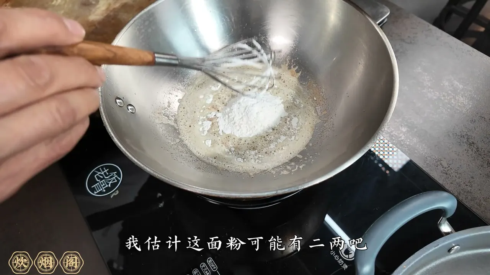
原片定位 00:39–04:12
01炒基础白汁
小火融化黄油，炒出面香黄油60克融化后继续温和加热，不是刚化开就立即下面粉；加入面粉100克，炒至闻到面香。加入干白／白葡萄酒约30克，再炒香。全程避免黄油或面粉焦褐。
基础白汁是原片整锅的用量，不是单人份配方。
从一锅白汁，到一盘热菜。保留原片的工艺细节，也把没有说清的用量坦诚留下。
12步完整流程16张原片截图22秒煎鱼示范先备菜，再煎烤；关键动作可在第8步直接观看。
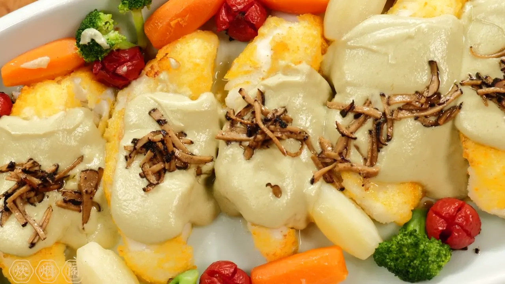
| 部分 | 准备什么 | 用量依据 | 用途与说明 |
|---|---|---|---|
| 主料 | 银鳕鱼、成熟牛油果 | 未给总克数或几人份 | 鱼块等大；牛油果打蓉 |
| 基础白汁 | 黄油60克、面粉100克、干白／白葡萄酒约30克 | 原片明确 | 整锅基础汁；不可误作单人份 |
| 基础白汁液体 | 牛奶、淡奶油 | 未给总量 | 牛奶分次加；小火搅拌至细腻 |
| 腌料 | 盐、白胡椒、白葡萄酒 | 少许／未给克数 | 腌8–10分钟，最长20分钟 |
| 蘸粉 | 玉米粉、吉士粉 | 混合粉约6∶4，玉米粉较多 | 另一面仅蘸玉米粉 |
| 蔬菜 | 土豆、胡萝卜、西兰花、西红柿 | 未给用量 | 大小一致；西红柿预先焗好 |
| 配料与调汁 | 黑松露配料、黄油、素油、酒、盐、糖、白胡椒、淡奶油 | 未给克数 | 最终调味在成汁时进行 |
工具：平底煎锅、小奶锅、软打蛋器、搅拌机、刀与砧板、烤盘与烤箱、冰水碗。家庭建议另备食品温度计；煎鱼与装盘工具保持洁净。
原片剪辑时长16分35秒，不等于实际总烹饪时长；解冻需另外安排。推荐先读完整教程，再动火。

黄油60克融化后继续温和加热，不是刚化开就立即下面粉；加入面粉100克，炒至闻到面香。加入干白／白葡萄酒约30克，再炒香。全程避免黄油或面粉焦褐。
基础白汁是原片整锅的用量，不是单人份配方。
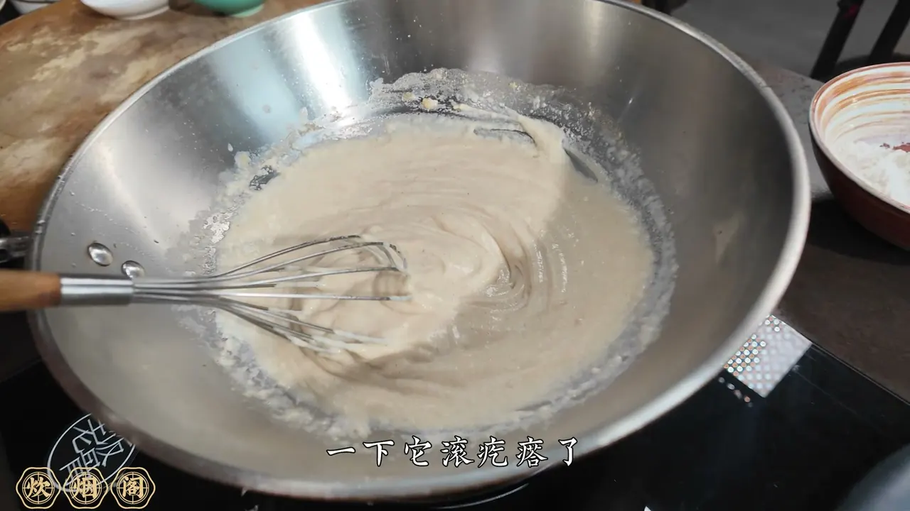
牛奶分次加入，用能贴到锅底与边角的软打蛋器持续搅匀。不要一次倒入全部牛奶；每次先把面团状的糊澥开，再继续加。小火慢慢炒炼，不能以“冒泡”代替炒透。后段加入一部分淡奶油。
判断：奶香与面香充分、无明显疙瘩；原片强调放凉后也不应有生面糊的黏口感。此时不调味，尤其不放盐。做好后覆盖、隔热水暂时保温，现做现用。
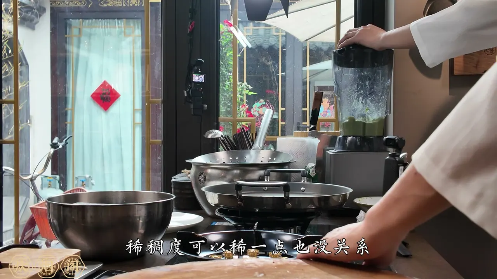
牛油果取果肉，打成均匀细蓉。原片说稍稀一点没有关系，但一定打匀、不能有疙瘩。牛油果总量以及打蓉时液体的种类与比例没有明确给出。
提前准备好备用，临近调汁时先温热，再与白汁混合。家庭建议：切开后尽快使用，减少久放氧化。
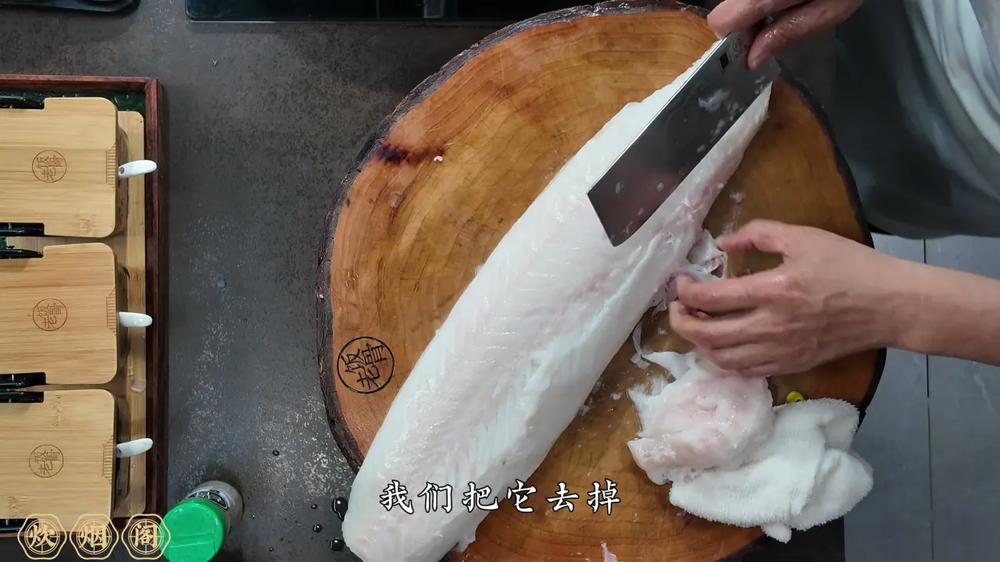
原片选用银鳕鱼，修去鱼刺、鱼皮及靠皮的红色血线，再斜刀切成大小尽量一致的单人份鱼块。鱼排厚薄统一，才能接近同时成熟。
不要把“九至十斤的整鱼”当成本菜所需用量。原片未给单块鱼排克数。家庭建议：冷藏缓慢解冻，不泡水，不长时间室温解冻；生熟工具分开。
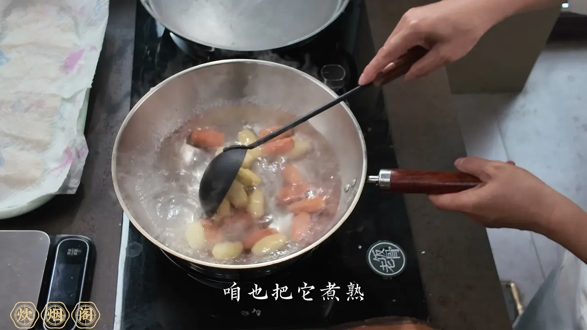
土豆、胡萝卜修成均匀的一口大小；原片土豆修成橄榄球状。水中加盐、少许糖、黄油及酒，先煮土豆和胡萝卜。原片参考时间为8–12分钟，以基本煮透为准。
西兰花另焯至七八成熟，马上冲凉／放冰水，保住翠绿与脆度。保留煮蔬菜的汤，稍后用于黑松露配料，并回热土豆、胡萝卜。
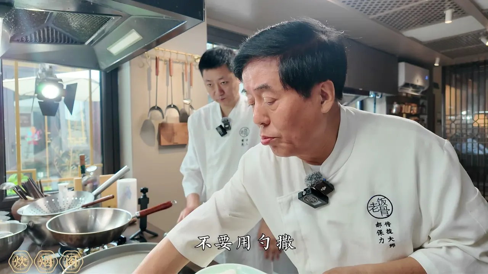
鱼解冻后沥去表面水分，均匀撒盐、白胡椒粉和少许白葡萄酒。手指捏盐、离鱼稍有距离地撒，避免结成一团。原片选白胡椒主要为保留鱼肉洁白，也避免黑胡椒风味过强。
原片：约8–10分钟即可，最长不超过20分钟，只让表面有底味，保留鱼本身的香气。家庭建议：腌制放冷藏。
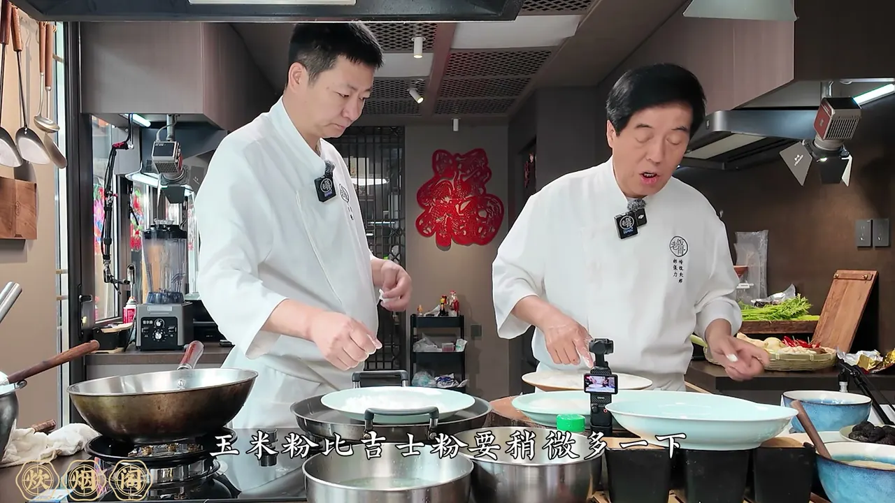
准备两盘粉：一盘玉米粉；另一盘玉米粉加吉士粉。原片说玉米粉略多，约“四六开”，按玉米粉∶吉士粉约6∶4理解。想朝上的展示面蘸混合粉，另一面蘸玉米粉，均匀覆盖。
这里的吉士粉是 custard powder，不是奶酪粉；不同品牌成分不同。用量以薄而均匀覆盖为准，原片未给克数。
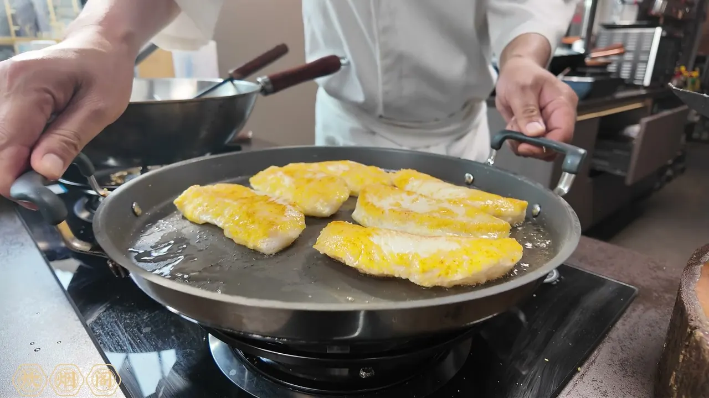
先用油润锅，再按热锅凉油的方式下鱼。鱼入锅后先等表皮绷住、定型，再翻面；动作轻，避免散碎。原片没有给明确油温、炉灶档位和每面秒数，不用机械计时替代观察。
煎至表面漂亮、定型，先放烤盘等待；原片此阶段尚有后续烤制，不代表鱼已熟。家庭全煎版本也可以，但必须把中心煎熟。
原片10:38–11:00，22秒，保留原声。观察入锅、表面定型与翻面动作；这是煎制示范，不包含最终烤熟过程。
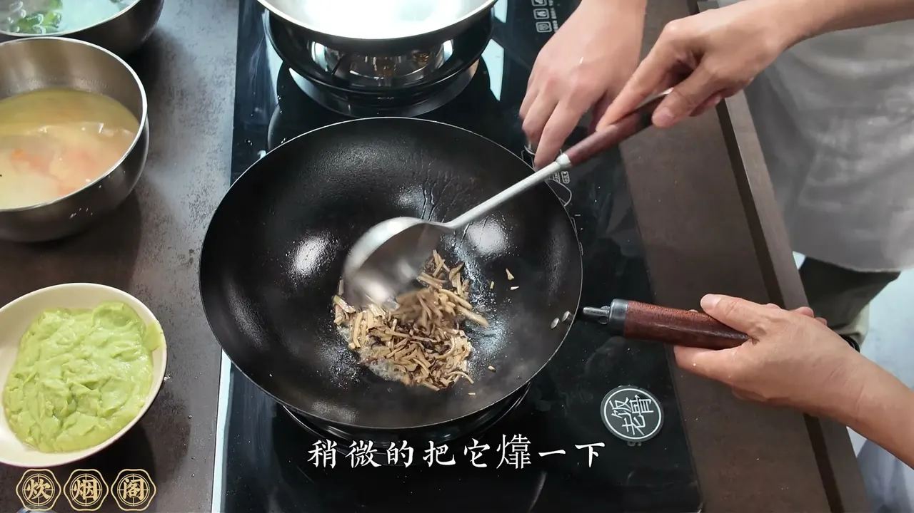
另锅炒黑菌丝／黑松露配料，加入黄油、酒，调入少量盐、糖、胡椒；糖只作提味，不要吃出甜味。添少许煮蔬菜的汤，稍微收干，让滋味收进去，出现香气后留作最后撒在鱼上。
原片后段明确称黑松露，未给品种、鲜干状态或克数。它是增加香气层次的点缀；家庭可省略，但不是原片完整版本。
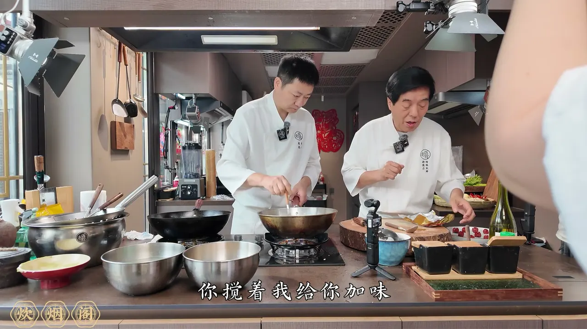
原片调汁时先加少许素油以防糊锅，并加白葡萄酒；白汁加热至基本开锅，再倒入预先温热的牛油果蓉，搅匀。此时才调盐，咸味要足但不应过咸，补一点糖，加入黄油增香，最后加淡奶油。
原片没有给白汁∶牛油果的比例和最终奶油量。判断：浅绿色、细腻、有流动感，勺子舀起能顺畅流下，不成坨；已经是熟的材料，不要持续猛熬。原片有明火加酒镜头，家庭不必模仿。
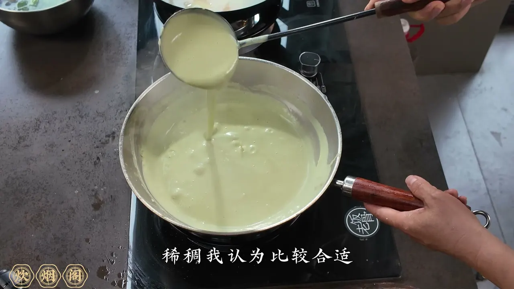
原片将煎过的鱼送入烤箱，温度提升到200℃，烤约8分钟。此间将保留汤中的土豆、胡萝卜回热捞出，再煸香；西兰花也回热并以盐、白胡椒补味。西红柿为预先在烤箱焗好的配菜。
8分钟只对应片中鱼块和设备，不是所有厚度的安全保证。家庭建议：以食品温度计确认鱼中心达到63℃；无烤箱可低至中火全程煎熟。原片未讲西红柿预处理、烘烤温度和时间。
温热餐盘，盛牛油果白汁作底／围汁，放上熟鱼，展示金黄的一面；配土豆、胡萝卜、西兰花及焗西红柿。最后在鱼上点缀炒香的黑松露配料，酱汁保持流动、盘边整洁，趁热上桌。
三条线同步收尾：鱼熟、汁热、配菜热。片中提到家庭也可把鱼切粒，炸熟后在此酱汁里翻匀，属于原片提供的另一种做法，并非本教程主流程。
基础白汁要炒透，不能有生面味、疙瘩。成品牛油果汁应细腻、浅绿、能流动而不稀成水。
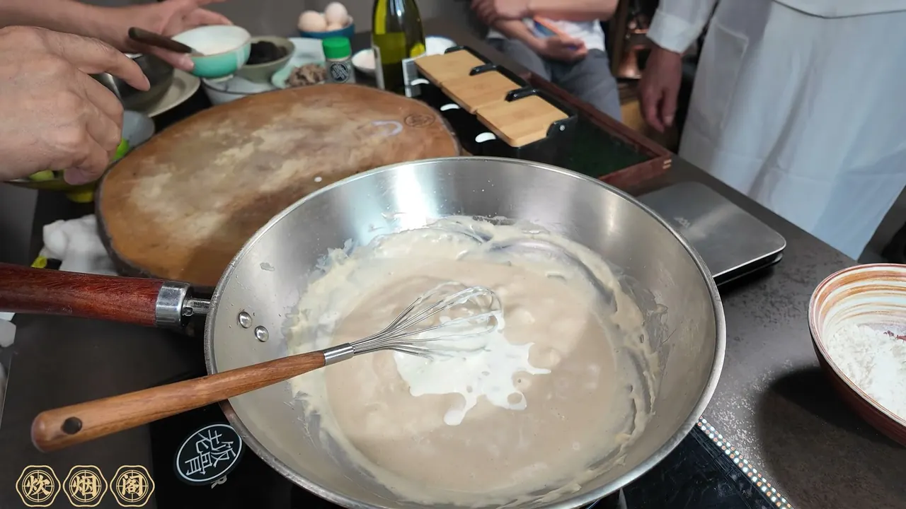
原片03:00，加入淡奶油后的白汁工序。
鱼外表金黄且完整，内里保持湿润但已熟；家庭可测中心63℃。土豆、胡萝卜穿透无硬心，西兰花翠绿不过软。
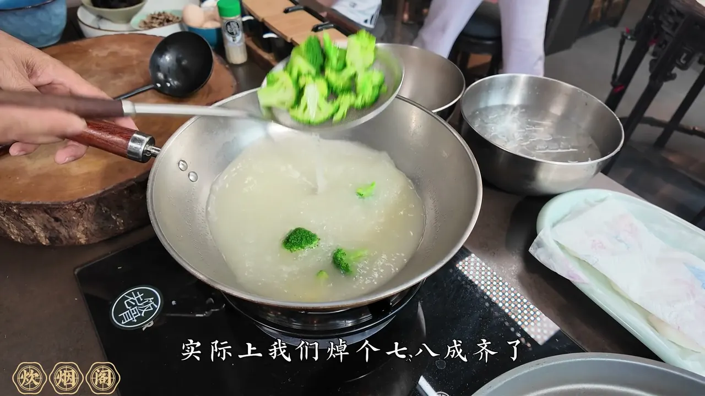
原片07:55，西兰花仅先焯七八成熟。
原片重点是小火、分次加牛奶、软抽子贴底搅。家庭补救建议：离火后用少量温牛奶逐步澥开并搅匀，必要时过筛；若已有焦煳气味，不要把糊底刮进汁中。
它是用于其他菜的基础汁，先不调味，成菜时再定咸淡。牛油果蓉、黄油与奶油加入后再尝最终味道。
不一定。原片200℃约8分钟是特定鱼块的参考，厚度、起始温度、烤箱都会改变成熟时间。家庭建议测最厚处63℃，不要只凭外表金黄判断。
家庭可简化：只用薄玉米粉、略去黑松露，或按个人喜好另配熟菌菇。但这样是家庭改法，不等同原片成品。吉士粉、奶油、黄油涉及蛋／奶等过敏原，面粉含小麦，使用前核对包装成分。
不需要。家庭建议离火少量加酒再回炉，远离明火，绝不对着火源直接从酒瓶倾倒；也可省略酒，风味会有差别。
家庭食安建议：生鱼及奶制品保持冷藏；保温仅用于短时衔接，勿常温久置。成菜尽快吃，剩菜2小时内冷藏，避免反复加热。原片没有给储存期限，本教程不扩写为保存配方。
来源：“老饭骨”银鳕鱼烹饪教学视频，画面为“老饭骨”烹饪教学。截图与片段均从该原片提取，供个人学习复刻，不代表新拍摄或原创食谱。视频自述的“国宴”背景按原片描述记录，未另作历史考证。
机器转写存在“鳕鱼→雪鱼／血鱼”“白汁→白芝”等错字，正文已结合画面、字幕及上下文校正。没有给出的参数不冒充原片数值。画面时间只用于定位，非每一步实耗时。
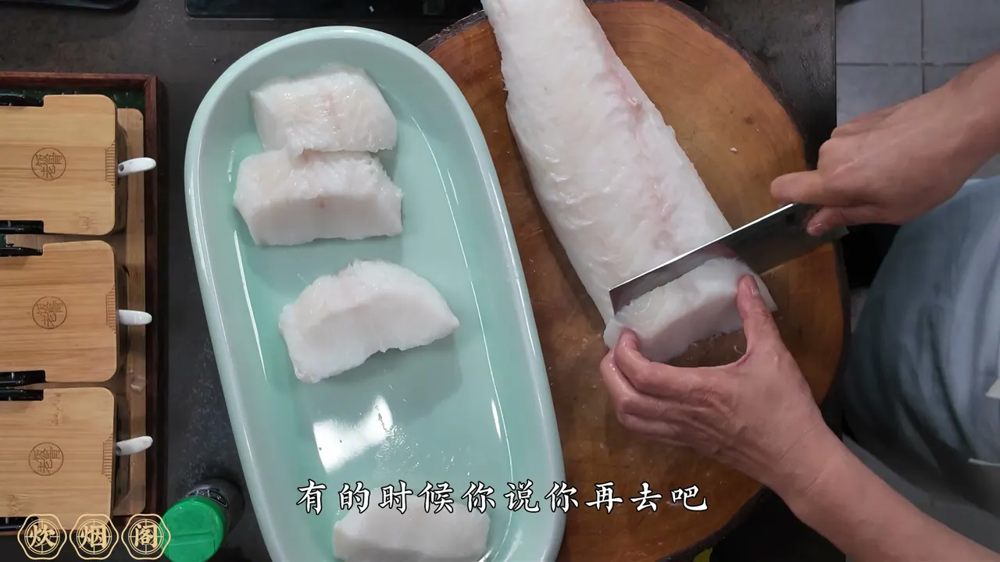
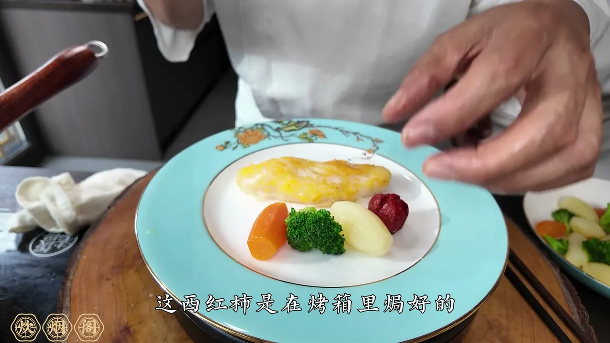